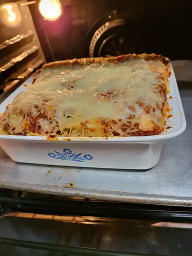

Homemade Lasagna Recipe

Homemade lasagna
Homemade lasagna isn't as hard to make as it seems. Don't be intimidated by all the layers of delicious Italian flavor - try this Homemade lasagnarecipe today!
Homemade Lasagna Ingredients
These are the ingridients you'll need to make this top-rated homemade lasagna recipe:
- Meat:
This lasagna recipe starts with a pound of ground meat(1/2 ground pork, 1/2 lean ground beef).
- Onion:
A dicesed onion is cooked until translucent with the ground meat.
- Canned tomatoes:
You'll need a can tomato sauce and a can of crushed tomatoes
- Fresh herbs:
For fresh flavor, chop two tablespoons of parsley and crush one clove of garlic
- Sugar:
A dash of sugar balances out all of the acidity from the tomatoes.
- Spices and seasoning:
This homemade lasagan is seasoned with dried basil, dried oregano, slat, and black pepper
- Noodles:
Of course, you'll need lasagna noodles! This recipe calls for uncooked noodles, but you can use the oven ready vareity to save time
- Cheese:
The cheese layer is made up of cottage cheese and Parmesan. You'll also need shredded mozzarella
- Eggs:
Eggs make the cheese layer extra creamy. Plus, they act as a binding agent( which means they hold the layer together)
